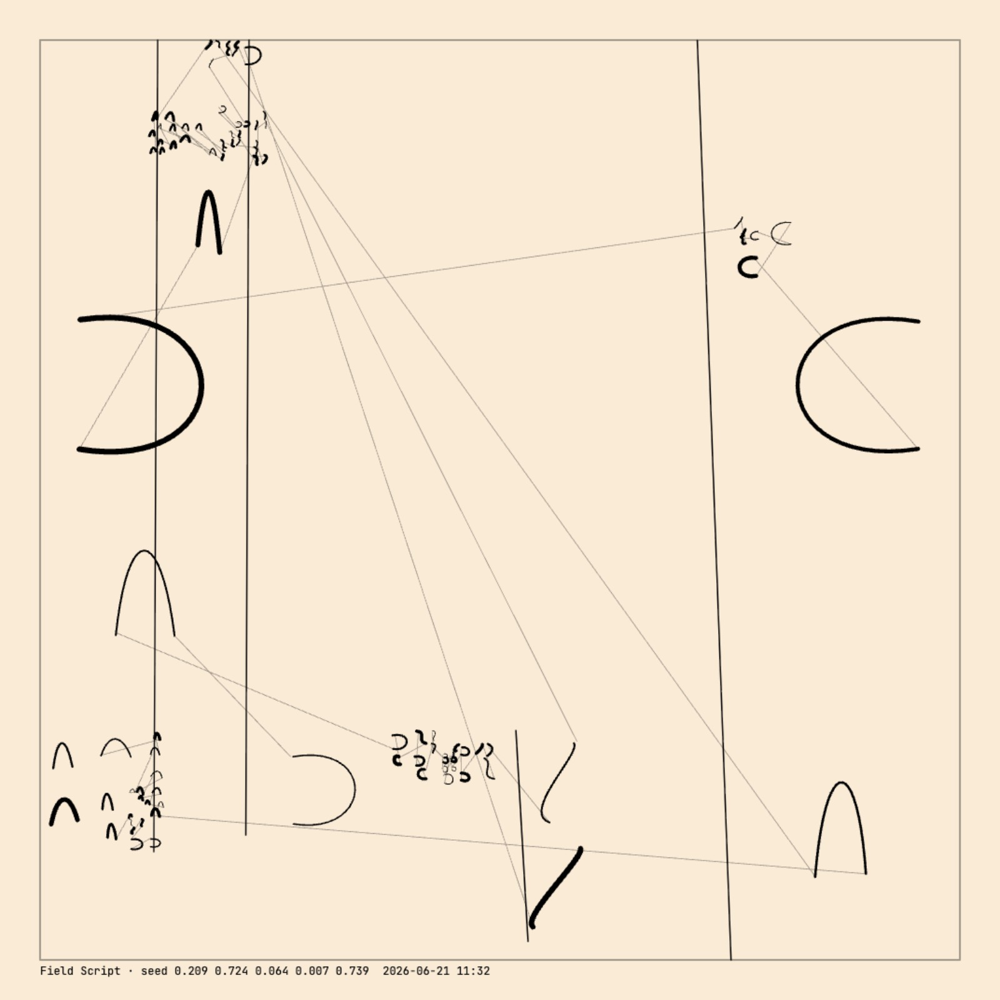
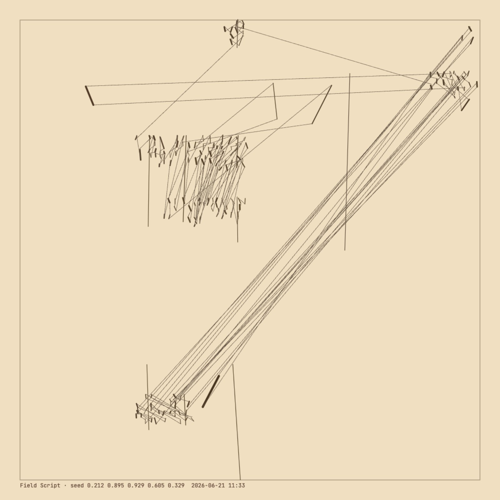
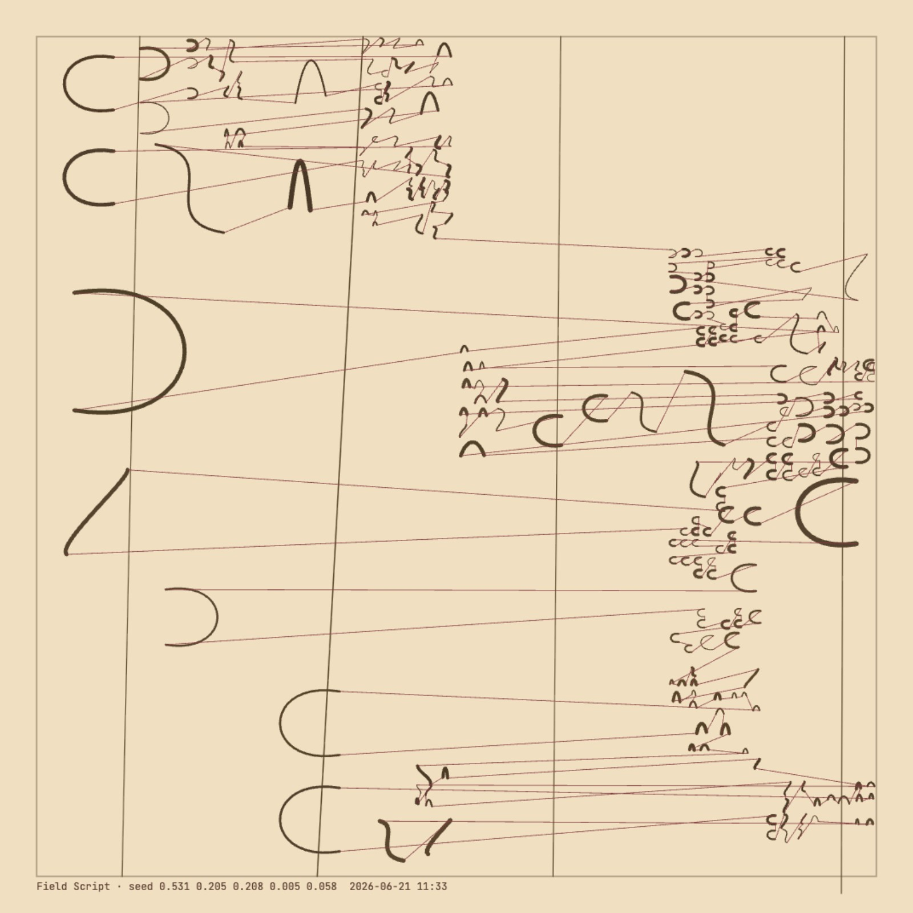
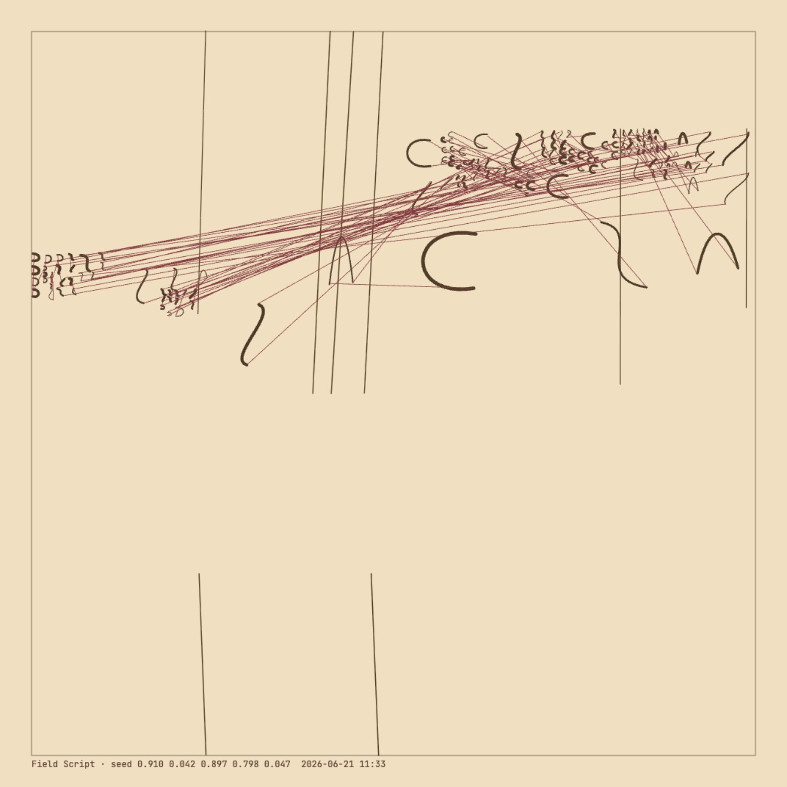

A generative asemic writing system: bezier glyph-marks scattered over a recursively-subdivided field, displaced by a wave, threaded with plotter lines. Its expressive range resolves into fourteen archetypes along a single axis — waveLevel, an openness dial running from densely packed to sparse and gestural.



